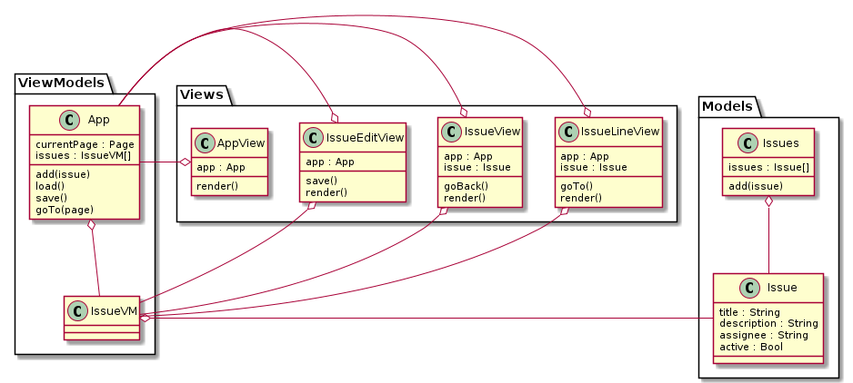
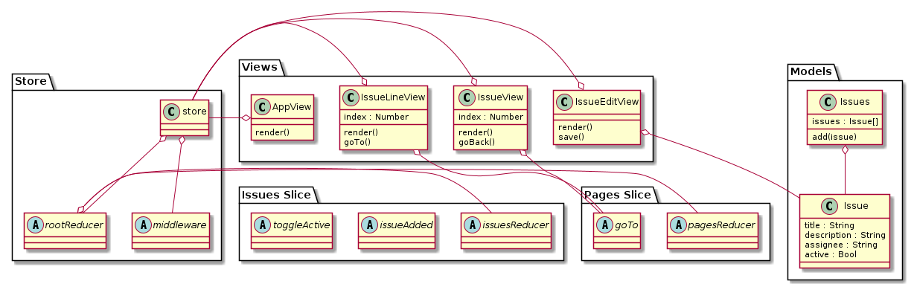
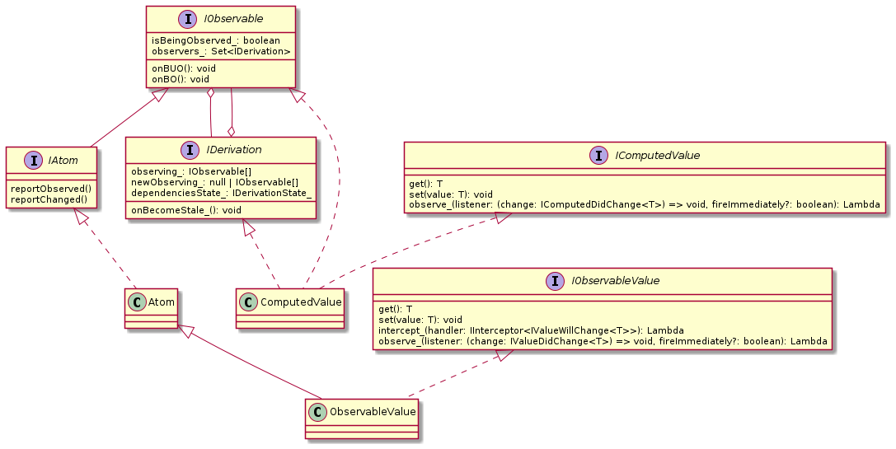

Client-side state management
Alex Chichigin
12 Mar 2021
About me
- PhD Student/Software Developer @ TU Delft
- MixDress hobby-developer
- ~10 years Web dev
- Haskell + Servant + Yesod
- Java + Spring MVC (Boot) / JavaEE 6
- Python + Django / Web2py
- Clojure + Noir + stuff
- Ruby on Rails many years ago
- I hate Web dev!

About lecture
- Somewhat advanced
- Supplemental
- Superficial
Basic example
class Timer extends React.Component {
constructor(props) {
super(props);
this.state = { seconds: 0 };
}
tick() {
this.setState(state => ({ seconds: state.seconds + 1 }));
}
componentDidMount() {
this.interval = setInterval(() => this.tick(), 1000);
}
componentWillUnmount() {
clearInterval(this.interval);
}
render() {
return (
<div>Seconds: {this.state.seconds}</div>
);
}
}
The challenge

Problems
- Reassembling whole structure from parts
- Validating relations
- Single responsibility violation
- Data management/audit
Solution
We need a Database!
Frameworks

Example app
"Domain Model"
export class Issue {
constructor(title = 'New issue', description = 'Issue description', assignee) {
this.title = title;
this.description = description;
this.assignee = assignee;
this.active = true;
}
}
export class Issues {
constructor(issues = []) {
this.issues = issues;
}
add(issue) {
this.issues.push(issue);
}
}
MobX
Objects with reactive properties
MobX concept

Reactive timer
import React from "react"
import ReactDOM from "react-dom"
import { makeAutoObservable } from "mobx"
import { observer } from "mobx-react"
class Timer {
secondsPassed = 0
constructor() {
makeAutoObservable(this)
}
increase() {
this.secondsPassed += 1
}
reset() {
this.secondsPassed = 0
}
}
Reactive timer UI
const myTimer = new Timer()
// Build a "user interface" that uses the observable state.
const TimerView = observer(({ timer }) => (
<button onClick={() => timer.reset()}>Seconds passed: {timer.secondsPassed}</button>
))
ReactDOM.render(<TimerView timer={myTimer} />, document.body)
// Update the 'Seconds passed: X' text every second.
setInterval(() => {
myTimer.increase()
}, 1000)
App Architecture

The Elm Architecture


Redux
Redux is a pattern and library for managing and updating application state, using events called "actions"
Redux counter
import { createStore } from 'redux'
function counterReducer(state = { value: 0 }, action) {
switch (action.type) {
case 'counter/incremented':
return { value: state.value + 1 }
case 'counter/decremented':
return { value: state.value - 1 }
default:
return state
}
}
// Create a Redux store holding the state of your app.
// Its API is { subscribe, dispatch, getState }.
let store = createStore(counterReducer)
store.subscribe(() => console.log(store.getState()))
store.dispatch({ type: 'counter/incremented' })
// {value: 1}
store.dispatch({ type: 'counter/incremented' })
// {value: 2}
store.dispatch({ type: 'counter/decremented' })
// {value: 1}
App Architecture

Redux version
Under the hood
There is no magic!
It's all just listeners...
MobX
MobX Architecture (excerpt)

MobX ObservableValue
export class ObservableValue<T> extends Atom implements IObservableValue<T>, IInterceptable<IValueWillChange<T>>, IListenable {
value_
public set(newValue: T) {
const oldValue = this.value_
newValue = this.prepareNewValue_(newValue) as any
if (newValue !== globalState.UNCHANGED) {
this.setNewValue_(newValue)
}
}
setNewValue_(newValue: T) {
const oldValue = this.value_
this.value_ = newValue
this.reportChanged()
if (hasListeners(this)) {
notifyListeners(this, {
type: UPDATE,
object: this,
newValue,
oldValue
})
}
}
}
MobX ObservableValue (cont)
export class ObservableValue<T> extends Atom implements IObservableValue<T>, IInterceptable<IValueWillChange<T>>, IListenable {
value_
// ...
public get(): T {
this.reportObserved()
return this.dehanceValue(this.value_)
}
observe_(listener: (change: IValueDidChange<T>) => void, fireImmediately?: boolean): Lambda {
if (fireImmediately)
listener({
observableKind: "value",
debugObjectName: this.name_,
object: this,
type: UPDATE,
newValue: this.value_,
oldValue: undefined
})
return registerListener(this, listener)
}
}
MobX propagateChanged
export function propagateChanged(observable: IObservable) {
if (observable.lowestObserverState_ === IDerivationState_.STALE_) return
observable.lowestObserverState_ = IDerivationState_.STALE_
observable.observers_.forEach(d => {
if (d.dependenciesState_ === IDerivationState_.UP_TO_DATE_) {
if (__DEV__ && d.isTracing_ !== TraceMode.NONE) {
logTraceInfo(d, observable)
}
d.onBecomeStale_()
}
d.dependenciesState_ = IDerivationState_.STALE_
})
}
Redux
Redux createStore
export default function createStore(reducer, preloadedState, enhancer) {
// checks ommited
let currentReducer = reducer, currentState = preloadedState
let currentListeners = [], nextListeners = currentListeners
let isDispatching = false
function getState() { /* checks ommited */ return currentState }
function subscribe(listener) { /* next slide */ }
function dispatch(action) { /* newxt slide */ }
// When a store is created, an "INIT" action is dispatched so that every
// reducer returns their initial state. This effectively populates the initial state tree.
dispatch({ type: ActionTypes.INIT })
const store = {
dispatch,
subscribe,
getState
}
return store
}
Redux createStore subscribe
function subscribe(listener) {
// checks ommited
let isSubscribed = true
nextListeners.push(listener)
return function unsubscribe() {
// checks ommited
isSubscribed = false
const index = nextListeners.indexOf(listener)
nextListeners.splice(index, 1)
currentListeners = null
}
}
Redux createStore dispatch
function dispatch(action) {
// checks ommited
try {
isDispatching = true
currentState = currentReducer(currentState, action)
} finally {
isDispatching = false
}
const listeners = (currentListeners = nextListeners)
for (let i = 0; i < listeners.length; i++) {
const listener = listeners[i]
listener()
}
return action
}
Redux combineReducers
export default function combineReducers(reducers) {
const reducerKeys = Object.keys(reducers)
const finalReducers = {}
for (let i = 0; i < reducerKeys.length; i++) {
const key = reducerKeys[i]
// undefined reporting ommited
if (typeof reducers[key] === 'function') {
finalReducers[key] = reducers[key]
}
}
const finalReducerKeys = Object.keys(finalReducers)
// checks ommited
return function combination(state = {}, action) {
// see the next slide
}
}
Redux combineReducers contined
export default function combineReducers(reducers) {
// ...
return function combination(state = {}, action) {
// checks ommited
let hasChanged = false
const nextState = {}
for (let i = 0; i < finalReducerKeys.length; i++) {
const key = finalReducerKeys[i]
const reducer = finalReducers[key], previousStateForKey = state[key]
const nextStateForKey = reducer(previousStateForKey, action)
if (typeof nextStateForKey === 'undefined') {
const errorMessage = getUndefinedStateErrorMessage(key, action)
throw new Error(errorMessage)
}
nextState[key] = nextStateForKey
hasChanged = hasChanged || nextStateForKey !== previousStateForKey
}
hasChanged = hasChanged || finalReducerKeys.length !== Object.keys(state).length
return hasChanged ? nextState : state
}
}